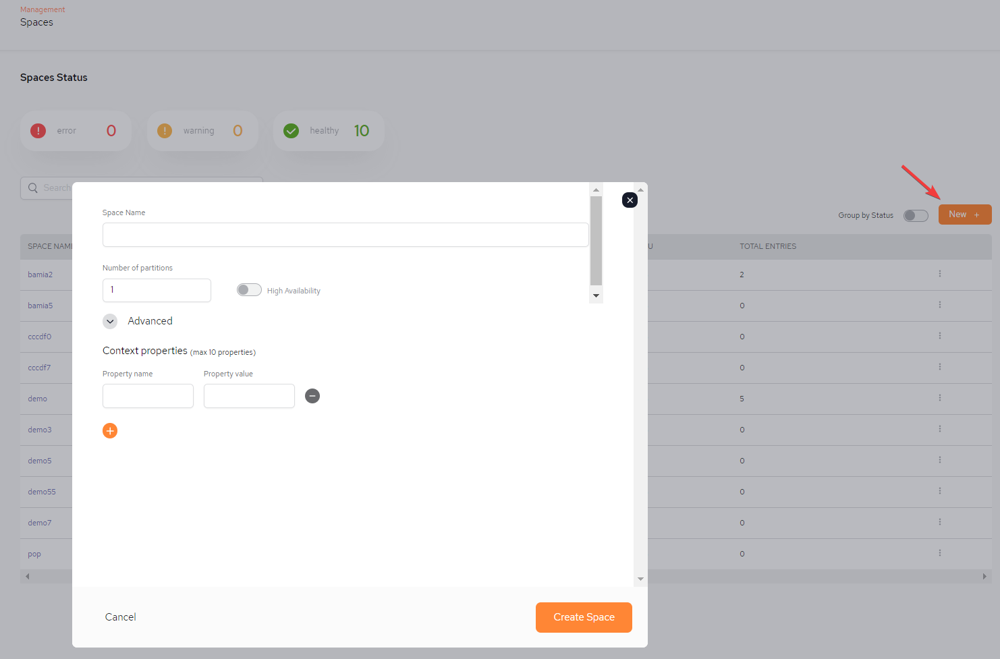
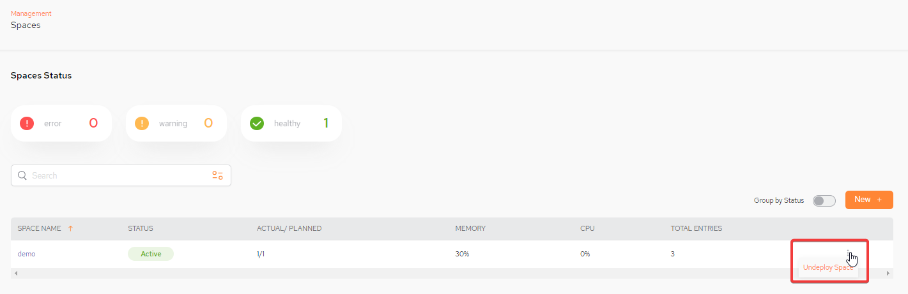

The Spaces Status screen displays the GigaSpaces
(Status Indicator – Error/Warning/Healthy in the screenshot example above) – possible values are –
Healthy - green - actual is equal to planned, no connectivity issues and memory utilization is less than 75%
Resource alerted - orange - utilization is more than 75%, actual is equal to planned, no connectivity issues
Unhealthy - connectivity issues/actual is not equal to planned/instance is down/ memory utilization is more than 90%
Group by Status – toggle to show the Spaces grouped by status
New + – Select this to configure a new Space
SPACE NAME – the name of the GigaSpaces Space object
STATUS – possible statuses given above
ACTUAL/PLANNED – actual topology relative to planned instances. Note that actual is less than planned if not enough hosts are available for planned primary and backup partitions.
MEMORY – percentage of memory used by the Space
CPU - percentage of CPU used by the Space
TOTAL ENTRIES – number of rows of data in the Space
To add a new space, click New + and fill in the new space parameters, as shown below.

Space Name – select which GigaSpaces Space object the query should be executed against.
Number of partitions - number of partitions defined for the space.
High Availability – toggle to on if the space should be high availability (including the backup).
Advanced/Context properties/Property name – TBD
Advanced/Context properties/Property value - TBD
Create Space - click to create the Space.
A space can be undeployed by selecting the kebab menu (vertical three-dot menu) on the far right and selecting Undeploy Space:
.
You can click on a Space name to see detailed information on the Space. See